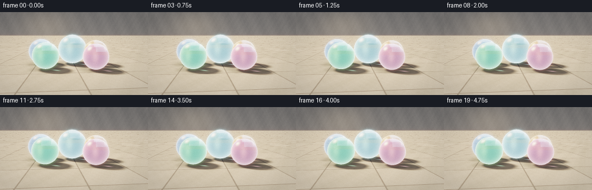
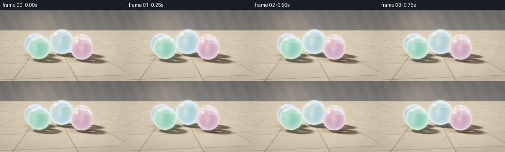
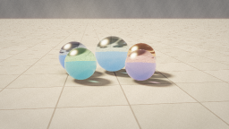
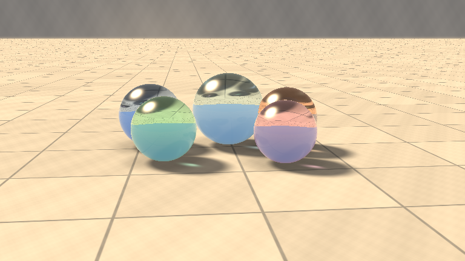
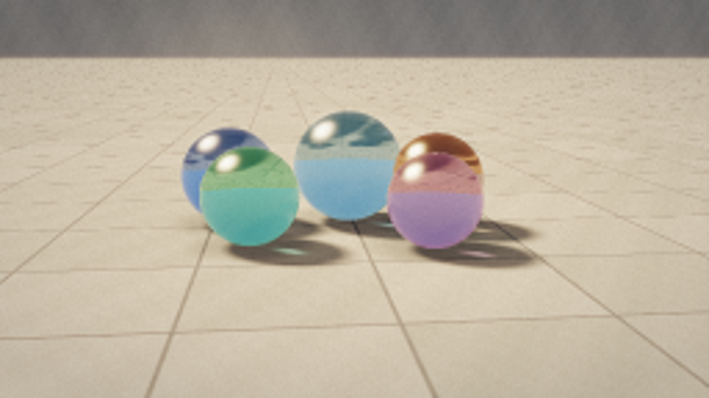
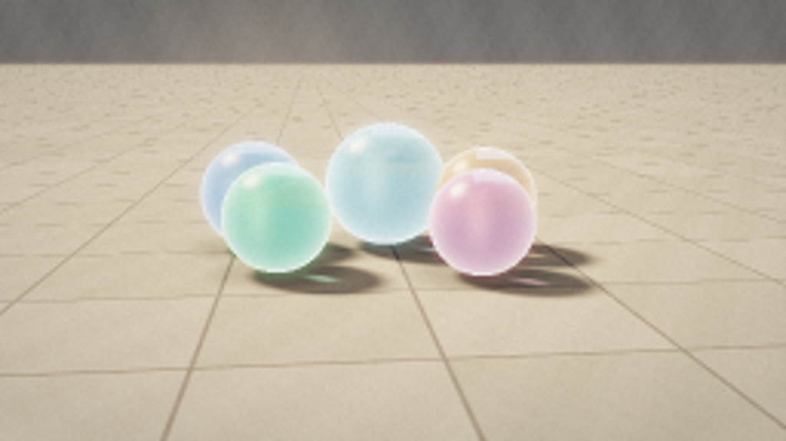
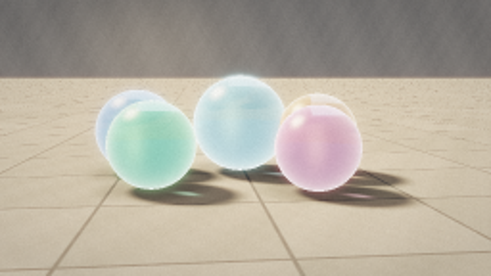
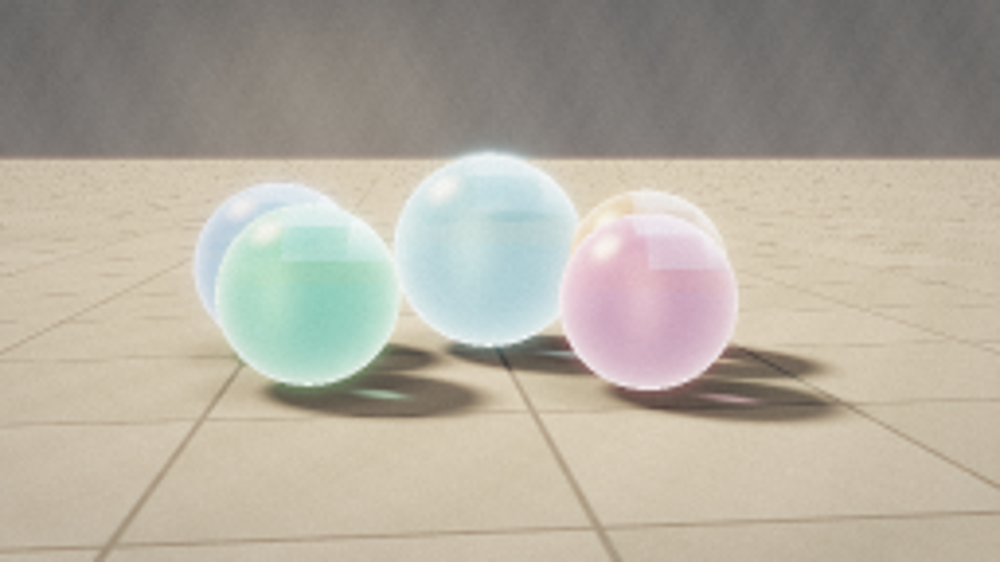
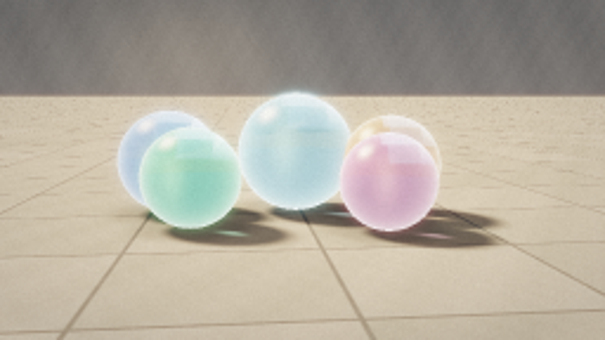

CODING AGENTS AS PIXEL WORLD MODELS
traex/DeepSeek-V4.1-Flash · phygen_078
点击播放 · 原生 RGB 像素
逐轮保存的候选
回放视频、检查图与代码变化。
每份候选均可单独播放。实际图片检查记录在下方工具轨迹中。
候选 01播放与检查图
点击播放 · 原生 RGB 像素


展开代码变化
--- 上一保存版本
+++ 本次保存版本
@@ -0,0 +1,531 @@
+"""Procedural sunlight scene with glass marbles, rendered from the text prompt."""
+
+from __future__ import annotations
+
+import argparse
+from pathlib import Path
+
+import cv2
+import numpy as np
+from PIL import Image
+
+from artifact_io import save
+
+
+ROOT = Path(__file__).resolve().parent
+WIDTH = 256
+HEIGHT = 144
+FRAME_COUNT = 20
+FPS = 4.0
+SUPERSAMPLE = 3
+
+UP = np.array([0.0, 1.0, 0.0], dtype=np.float32)
+SUN_DIR = np.array([-0.55, 0.72, -0.35], dtype=np.float32)
+SUN_DIR /= np.linalg.norm(SUN_DIR)
+SUN_COLOR = np.array([1.0, 0.84, 0.62], dtype=np.float32)
+WALL_Z = -1.55
+
+
+MARBLES = [
+ {
+ "center": np.array([-0.64, 0.245, -0.04], dtype=np.float32),
+ "radius": 0.245,
+ "tint": np.array([0.30, 0.60, 1.00], dtype=np.float32),
+ "absorption": 2.15,
+ },
+ {
+ "center": np.array([0.42, 0.235, 0.02], dtype=np.float32),
+ "radius": 0.235,
+ "tint": np.array([1.00, 0.48, 0.10], dtype=np.float32),
+ "absorption": 2.40,
+ },
+ {
+ "center": np.array([-0.03, 0.285, -0.10], dtype=np.float32),
+ "radius": 0.285,
+ "tint": np.array([0.45, 0.96, 1.00], dtype=np.float32),
+ "absorption": 0.75,
+ },
+ {
+ "center": np.array([-0.47, 0.225, 0.43], dtype=np.float32),
+ "radius": 0.225,
+ "tint": np.array([0.22, 1.00, 0.55], dtype=np.float32),
+ "absorption": 1.75,
+ },
+ {
+ "center": np.array([0.36, 0.215, 0.48], dtype=np.float32),
+ "radius": 0.215,
+ "tint": np.array([1.00, 0.30, 0.52], dtype=np.float32),
+ "absorption": 1.65,
+ },
+]
+
+CENTERS = np.stack([m["center"] for m in MARBLES]).astype(np.float32)
+RADII = np.array([m["radius"] for m in MARBLES], dtype=np.float32)
+TINTS = np.stack([m["tint"] for m in MARBLES]).astype(np.float32)
+ABSORPTIONS = np.array([m["absorption"] for m in MARBLES], dtype=np.float32)
+
+
+def normalize(vectors: np.ndarray) -> np.ndarray:
+ return vectors / np.maximum(np.linalg.norm(vectors, axis=-1, keepdims=True), 1e-8)
+
+
+def dot(a: np.ndarray, b: np.ndarray) -> np.ndarray:
+ return np.sum(a * b, axis=-1)
+
+
+def smoothstep(edge0: float, edge1: float, values: np.ndarray) -> np.ndarray:
+ x = np.clip(
+ (values - edge0) / np.maximum(edge1 - edge0, 1e-8), 0.0, 1.0
+ )
+ return x * x * (3.0 - 2.0 * x)
+
+
+def fract(values: np.ndarray) -> np.ndarray:
+ return values - np.floor(values)
+
+
+def hash2(x: np.ndarray, y: np.ndarray) -> np.ndarray:
+ return fract(np.sin(x * 127.1 + y * 311.7) * 43758.5453)
+
+
+def fbm(x: np.ndarray, y: np.ndarray) -> np.ndarray:
+ return (
+ 0.50 * np.sin(x * 2.7 + y * 1.3)
+ + 0.25 * np.sin(x * 7.9 - y * 5.2 + 0.8)
+ + 0.14 * np.sin(x * 19.3 + y * 17.1 + 2.1)
+ + 0.07 * np.sin(x * 43.1 - y * 37.7)
+ )
+
+
+def floor_shading(points: np.ndarray) -> np.ndarray:
+ """Warm stone floor, direct sun, marble shadows, contact shade and caustics."""
+ x = points[:, 0]
+ z = points[:, 2]
+ count = points.shape[0]
+
+ angle = np.float32(0.105)
+ ca, sa = np.cos(angle), np.sin(angle)
+ u = (x * ca - z * sa) / 0.72
+ v = (x * sa + z * ca) / 0.72
+ fu, fv = fract(u), fract(v)
+ cell_x, cell_z = np.floor(u), np.floor(v)
+ edge = np.minimum.reduce([fu, 1.0 - fu, fv, 1.0 - fv]) * 0.72
+
+ tile_noise = hash2(cell_x, cell_z)
+ stone_variation = 0.88 + 0.15 * tile_noise
+ grain = fbm(x * 7.0, z * 7.0)
+ fine = fbm(x * 31.0 + 4.2, z * 29.0 - 1.7)
+ base = np.empty((count, 3), dtype=np.float32)
+ base[:] = np.array([0.60, 0.545, 0.455], dtype=np.float32)
+ base *= stone_variation[:, None]
+ base += grain[:, None] * np.array([0.035, 0.032, 0.028], dtype=np.float32)
+ base += fine[:, None] * np.array([0.012, 0.011, 0.010], dtype=np.float32)
+
+ grout_mix = 1.0 - smoothstep(0.004, 0.012, edge)
+ grout = np.array([0.30, 0.285, 0.255], dtype=np.float32)
+ grout = grout[None, :] * (
+ 0.92 + 0.08 * fbm(x * 24.0, z * 24.0)
+ )[:, None]
+ base = base * (1.0 - grout_mix[:, None]) + grout * grout_mix[:, None]
+
+ ndotl = np.full(count, max(float(np.dot(UP, SUN_DIR)), 0.0), dtype=np.float32)
+ shadow = np.zeros(count, dtype=np.float32)
+ occlusion = np.ones(count, dtype=np.float32)
+
+ for index, marble in enumerate(MARBLES):
+ center = MARBLES[index]["center"]
+ radius = float(MARBLES[index]["radius"])
+ to_center = center[None, :] - points
+ along = dot(to_center, np.broadcast_to(SUN_DIR, to_center.shape))
+ distance_sq = np.maximum(dot(to_center, to_center) - along * along, 0.0)
+ perpendicular = np.sqrt(distance_sq)
+ penumbra = 0.025 + 0.055 * np.maximum(along, 0.0)
+ coverage = 1.0 - smoothstep(radius - penumbra, radius + penumbra, perpendicular)
+ coverage *= smoothstep(-0.035, 0.018, along)
+ shadow = np.maximum(shadow, coverage * 0.91)
+
+ rho = np.sqrt((x - center[0]) ** 2 + (z - center[2]) ** 2)
+ contact = np.exp(-((rho / (radius * 1.24)) ** 6))
+ occlusion *= 1.0 - 0.34 * contact
+
+ direct = SUN_COLOR[None, :] * (2.05 * ndotl)[:, None]
+ ambient = np.array([0.105, 0.115, 0.135], dtype=np.float32)
+ bounce = np.array([0.105, 0.085, 0.060], dtype=np.float32)
+ color = base * (direct * (1.0 - shadow[:, None]) + ambient + bounce)
+
+ # Small, slightly stretched caustics make the glass read as focusing light.
+ caustic = np.zeros((count, 3), dtype=np.float32)
+ shadow_axis = -normalize(np.array([SUN_DIR[0], 0.0, SUN_DIR[2]], dtype=np.float32))
+ side_axis = np.array([-shadow_axis[2], 0.0, shadow_axis[0]], dtype=np.float32)
+ for index, marble in enumerate(MARBLES):
+ center = MARBLES[index]["center"]
+ radius = float(MARBLES[index]["radius"])
+ projection = center - SUN_DIR * (center[1] / SUN_DIR[1])
+ delta = points - projection[None, :]
+ along = delta[:, 0] * shadow_axis[0] + delta[:, 2] * shadow_axis[2]
+ across = delta[:, 0] * side_axis[0] + delta[:, 2] * side_axis[2]
+ first = np.exp(
+ -((along - 0.055 * radius) / (0.28 * radius)) ** 2
+ - (across / (0.12 * radius)) ** 2
+ )
+ second = np.exp(
+ -((along - 0.14 * radius) / (0.17 * radius)) ** 2
+ - ((across + 0.055 * radius) / (0.075 * radius)) ** 2
+ )
+ tint = MARBLES[index]["tint"]
+ caustic_color = 0.44 * np.array([1.0, 0.92, 0.78], dtype=np.float32)
+ caustic_color += 0.56 * tint
+ caustic += (first + 0.65 * second)[:, None] * caustic_color[None, :] * 0.52
+
+ color += caustic * (0.55 + 0.45 * shadow[:, None])
+ color *= occlusion[:, None]
+ return np.maximum(color, 0.0)
+
+
+def wall_shading(points: np.ndarray) -> np.ndarray:
+ x = points[:, 0]
+ y = np.maximum(points[:, 1], 0.0)
+ count = points.shape[0]
+ plaster = fbm(x * 5.2 + 1.1, y * 4.6 - 0.7)
+ fine = fbm(x * 27.0 - 2.4, y * 31.0 + 0.3)
+ base = np.empty((count, 3), dtype=np.float32)
+ base[:] = np.array([0.205, 0.195, 0.185], dtype=np.float32)
+ base += plaster[:, None] * np.array([0.020, 0.018, 0.016], dtype=np.float32)
+ base += fine[:, None] * np.array([0.006, 0.006, 0.005], dtype=np.float32)
+
+ floor_bounce = np.exp(-y / 0.48)[:, None] * np.array(
+ [0.105, 0.075, 0.045], dtype=np.float32
+ )
+ warm_spill = np.exp(
+ -((x + 0.80) / 0.70) ** 2 - ((y - 0.82) / 0.48) ** 2
+ )[:, None] * np.array([0.095, 0.072, 0.045], dtype=np.float32)
+ return base + floor_bounce + warm_spill
+
+
+def refract(
+ incoming: np.ndarray, normal: np.ndarray, eta: float
+) -> tuple[np.ndarray, np.ndarray]:
+ cos_i = np.clip(-dot(incoming, normal), 0.0, 1.0)
+ k = 1.0 - eta * eta * (1.0 - cos_i * cos_i)
+ valid = k > 0.0
+ sqrt_k = np.sqrt(np.maximum(k, 0.0))
+ outgoing = incoming * eta + normal * (eta * cos_i - sqrt_k)[:, None]
+ outgoing = normalize(outgoing)
+ return outgoing, valid
+
+
+def reflect(incoming: np.ndarray, normal: np.ndarray) -> np.ndarray:
+ return incoming - 2.0 * dot(incoming, normal)[:, None] * normal
+
+
+def environment(origin: np.ndarray, direction: np.ndarray) -> np.ndarray:
+ """Cheap secondary ray environment: stone floor, shaded wall, then sky."""
+ count = origin.shape[0]
+ result = np.zeros((count, 3), dtype=np.float32)
+ direction = normalize(direction)
+
+ floor_mask = direction[:, 1] < -1e-4
+ floor_t = np.zeros(count, dtype=np.float32)
+ floor_t[floor_mask] = -origin[floor_mask, 1] / direction[floor_mask, 1]
+ floor_hit = floor_mask & (floor_t > 1e-5)
+ if np.any(floor_hit):
+ floor_points = origin[floor_hit] + direction[floor_hit] * floor_t[floor_hit, None]
+ result[floor_hit] = floor_shading(floor_points) * 0.68
+
+ wall_mask = ~floor_hit & (direction[:, 2] < -1e-4)
+ wall_t = np.zeros(count, dtype=np.float32)
+ wall_t[wall_mask] = (WALL_Z - origin[wall_mask, 2]) / direction[wall_mask, 2]
+ wall_hit = wall_mask & (wall_t > 1e-5)
+ if np.any(wall_hit):
+ wall_points = origin[wall_hit] + direction[wall_hit] * wall_t[wall_hit, None]
+ wall_points[:, 1] = np.maximum(wall_points[:, 1], 0.0)
+ result[wall_hit] = wall_shading(wall_points)
+
+ sky_mask = ~(floor_hit | wall_hit)
+ if np.any(sky_mask):
+ sky_y = np.clip(direction[sky_mask, 1], 0.0, 1.0)
+ horizon = np.array([0.46, 0.55, 0.64], dtype=np.float32)
+ zenith = np.array([0.16, 0.28, 0.47], dtype=np.float32)
+ result[sky_mask] = horizon * (1.0 - sky_y[:, None]) + zenith * sky_y[:, None]
+
+ return result
+
+
+def camera_for_frame(frame_index: int) -> tuple[np.ndarray, np.ndarray]:
+ t = frame_index / max(FRAME_COUNT - 1, 1)
+ phase = 2.0 * np.pi * t
+ camera = np.array(
+ [
+ 0.012 * np.sin(phase * 0.72),
+ 0.555 + 0.003 * np.sin(phase * 0.53 + 0.7),
+ 2.92 - 0.045 * t,
+ ],
+ dtype=np.float32,
+ )
+ target = np.array(
+ [
+ 0.006 * np.sin(phase * 0.42 + 0.4),
+ 0.205 + 0.003 * np.sin(phase * 0.38),
+ -0.02,
+ ],
+ dtype=np.float32,
+ )
+ return camera, target
+
+
+def render_linear(frame_index: int) -> np.ndarray:
+ render_width = WIDTH * SUPERSAMPLE
+ render_height = HEIGHT * SUPERSAMPLE
+ camera, target = camera_for_frame(frame_index)
+
+ forward = normalize((target - camera)[None, :])[0]
+ right = normalize(np.cross(forward[None, :], UP[None, :]))[0]
+ true_up = normalize(np.cross(right[None, :], forward[None, :]))[0]
+ aspect = WIDTH / HEIGHT
+ half_height = np.tan(np.deg2rad(15.5))
+
+ ys, xs = np.mgrid[0:render_height, 0:render_width].astype(np.float32)
+ ndc_x = ((xs + 0.5) / render_width * 2.0 - 1.0) * aspect * half_height
+ ndc_y = (1.0 - (ys + 0.5) / render_height * 2.0) * half_height
+ direction = normalize(
+ forward[None, None, :]
+ + right[None, None, :] * ndc_x[:, :, None]
+ + true_up[None, None, :] * ndc_y[:, :, None]
+ )
+ origin = np.broadcast_to(camera, direction.shape).copy()
+
+ direction_flat = direction.reshape(-1, 3)
+ origin_flat = origin.reshape(-1, 3)
+ pixel_count = direction_flat.shape[0]
+
+ floor_t = np.full(pixel_count, np.inf, dtype=np.float32)
+ downward = direction_flat[:, 1] < -1e-5
+ floor_t[downward] = -origin_flat[downward, 1] / direction_flat[downward, 1]
+ floor_t[floor_t <= 1e-5] = np.inf
+
+ sphere_t = np.full(pixel_count, np.inf, dtype=np.float32)
+ sphere_id = np.full(pixel_count, -1, dtype=np.int16)
+ for index in range(len(MARBLES)):
+ oc = origin_flat - CENTERS[index][None, :]
+ b = dot(oc, direction_flat)
+ c = dot(oc, oc) - RADII[index] ** 2
+ discriminant = b * b - c
+ valid = discriminant > 0.0
+ root = np.full(pixel_count, np.inf, dtype=np.float32)
+ root[valid] = -b[valid] - np.sqrt(discriminant[valid])
+ root[root <= 1e-5] = np.inf
+ closer = root < sphere_t
+ sphere_t[closer] = root[closer]
+ sphere_id[closer] = index
+
+ sphere_mask = sphere_id >= 0
+ visible_sphere = sphere_mask & (sphere_t < floor_t)
+ visible_floor = np.isfinite(floor_t) & ~visible_sphere
+ background = ~(visible_sphere | visible_floor)
+
+ color = np.zeros((pixel_count, 3), dtype=np.float32)
+
+ if np.any(visible_floor):
+ floor_points = (
+ origin_flat[visible_floor]
+ + direction_flat[visible_floor] * floor_t[visible_floor, None]
+ )
+ color[visible_floor] = floor_shading(floor_points)
+
+ if np.any(background):
+ color[background] = environment(
+ origin_flat[background], direction_flat[background]
+ )
+
+ if np.any(visible_sphere):
+ indices = np.flatnonzero(visible_sphere)
+ ids = sphere_id[indices]
+ centers = CENTERS[ids]
+ radii = RADII[ids, None]
+ tints = TINTS[ids]
+ absorptions = ABSORPTIONS[ids]
+ rays = direction_flat[indices]
+ hit_points = origin_flat[indices] + rays * sphere_t[indices, None]
+ normals = (hit_points - centers) / radii
+ cos_view = np.clip(-dot(rays, normals), 0.0, 1.0)
+ fresnel = 0.035 + 0.965 * (1.0 - cos_view) ** 5
+
+ reflected_dir = reflect(rays, normals)
+ reflected = environment(hit_points + normals * 1e-4, reflected_dir)
+
+ half_vector = normalize(
+ SUN_DIR[None, :] - rays
+ )
+ specular = np.power(
+ np.clip(dot(normals, half_vector), 0.0, 1.0), 96.0
+ )
+ glint = (
+ specular[:, None]
+ * SUN_COLOR[None, :]
+ * np.array([5.8, 5.2, 4.3], dtype=np.float32)[None, :]
+ )
+
+ eta_in = 1.0 / 1.50
+ inside_dir, _ = refract(rays, normals, eta_in)
+ inside_origin = hit_points + inside_dir * 2e-4
+ oc = inside_origin - centers
+ b = dot(oc, inside_dir)
+ disc = b * b - (dot(oc, oc) - radii[:, 0] ** 2)
+ exit_t = -b + np.sqrt(np.maximum(disc, 0.0))
+ exit_t = np.maximum(exit_t, 1e-5)
+ exit_points = inside_origin + inside_dir * exit_t[:, None]
+ exit_normals = (exit_points - centers) / radii
+ outside_dir, valid_exit = refract(inside_dir, exit_normals, 1.50)
+
+ total_internal = ~valid_exit
+ if np.any(total_internal):
+ outside_dir[total_internal] = reflect(
+ inside_dir[total_internal], exit_normals[total_internal]
+ )
+ transmitted = environment(
+ exit_points + outside_dir * 2e-4, outside_dir
+ )
+
+ absorption = np.exp(
+ -(1.0 - tints) * absorptions[:, None] * exit_t[:, None]
+ )
+ transmitted = transmitted * 0.72 + 0.28 * (
+ np.array([0.36, 0.39, 0.42], dtype=np.float32)[None, :]
+ * tints
+ )
+ transmitted *= absorption
+ transmitted *= np.array([0.97, 0.985, 1.0], dtype=np.float32)[None, :]
+
+ surface = (
+ transmitted * (1.0 - fresnel[:, None])
+ + reflected * fresnel[:, None]
+ + glint
+ )
+
+ # Internal focusing and rim highlights carry the glass read at this scale.
+ local_x = dot(normals, right[None, :])
+ local_y = dot(normals, true_up[None, :])
+ focus_band = np.exp(
+ -((local_x + 0.18) / 0.22) ** 2
+ -((local_y - 0.05) / 0.48) ** 2
+ )
+ inner_shade = np.clip(dot(normals, SUN_DIR[None, :]), 0.0, 1.0)
+ body = (
+ tints * (0.62 + 0.56 * inner_shade[:, None])
+ + np.array([0.16, 0.18, 0.20], dtype=np.float32)[None, :]
+ )
+ surface = surface * 0.38 + body * 0.72
+ surface += focus_band[:, None] * (
+ np.array([1.0, 0.86, 0.58], dtype=np.float32)[None, :]
+ * (0.16 + 0.24 * tints)
+ )
+
+ rim = np.power(1.0 - cos_view, 1.55)[:, None]
+ rim_light = np.array([1.0, 0.91, 0.75], dtype=np.float32)[None, :]
+ surface += rim * (rim_light * 0.76 + tints * 0.34)
+ surface += np.power(1.0 - cos_view, 7.0)[:, None] * np.array(
+ [1.7, 1.6, 1.4], dtype=np.float32
+ )[None, :]
+
+ # Fresnel window reflection with a soft lower edge.
+ window = smoothstep(0.20, 0.02, np.abs(local_x + 0.42))
+ window *= smoothstep(-0.40, -0.08, local_y) * smoothstep(
+ 0.72, 0.38, local_y
+ )
+ window *= 0.66 + 0.34 * np.exp(-((local_y - 0.24) / 0.23) ** 2)
+ surface += window[:, None] * np.array(
+ [0.50, 0.62, 0.76], dtype=np.float32
+ )[None, :]
+
+ overhead = smoothstep(0.30, 0.94, local_y)
+ overhead *= smoothstep(0.72, 0.10, np.abs(local_x + 0.20))
+ surface += overhead[:, None] * (
+ np.array([0.75, 0.83, 0.90], dtype=np.float32)[None, :]
+ + 0.22 * tints
+ )
+ cool_edge = smoothstep(-0.12, -0.82, local_x) * smoothstep(
+ 0.35, -0.70, local_y
+ )
+ surface += cool_edge[:, None] * np.array(
+ [0.10, 0.17, 0.24], dtype=np.float32
+ )[None, :]
+ color[indices] = surface
+
+ image = color.reshape(render_height, render_width, 3)
+ background_image = background.reshape(render_height, render_width)
+ if np.any(background_image):
+ blurred = cv2.GaussianBlur(image, (0, 0), sigmaX=2.2, sigmaY=2.2)
+ mask = background_image[:, :, None].astype(np.float32)
+ image = image * (1.0 - 0.72 * mask) + blurred * (0.72 * mask)
+ return image
+
+
+def postprocess(linear: np.ndarray, frame_index: int) -> np.ndarray:
+ highlights = np.maximum(linear - 0.82, 0.0)
+ bloom = cv2.GaussianBlur(highlights, (0, 0), sigmaX=5.0, sigmaY=5.0)
+ bloom += 0.42 * cv2.GaussianBlur(highlights, (0, 0), sigmaX=13.0, sigmaY=13.0)
+ linear = linear + bloom * 0.34
+
+ # Filmic shoulder with a slight warm highlight and cool shadow bias.
+ exposed = linear * 0.72
+ mapped = (
+ exposed * (2.51 * exposed + 0.03)
+ / (exposed * (2.43 * exposed + 0.59) + 0.14)
+ )
+ mapped = np.clip(mapped, 0.0, 1.0)
+ luminance = np.sum(mapped * np.array([0.2126, 0.7152, 0.0722]), axis=-1)
+ mapped += (1.0 - luminance[:, :, None]) * np.array(
+ [-0.008, 0.000, 0.012], dtype=np.float32
+ )
+ mapped = np.power(np.maximum(mapped, 0.0), 1.0 / 2.2)
+
+ height, width = mapped.shape[:2]
+ yy, xx = np.mgrid[0:height, 0:width].astype(np.float32)
+ nx = (xx / (width - 1) - 0.5) * 2.0
+ ny = (yy / (height - 1) - 0.5) * 2.0
+ vignette = 1.0 - 0.14 * np.clip(nx * nx * 0.55 + ny * ny * 0.75, 0.0, 1.0)
+ mapped *= vignette[:, :, None]
+
+ small = cv2.resize(
+ mapped, (WIDTH, HEIGHT), interpolation=cv2.INTER_AREA
+ )
+ soft = cv2.GaussianBlur(small, (0, 0), sigmaX=0.55, sigmaY=0.55)
+ small = np.clip(small + 0.20 * (small - soft), 0.0, 1.0)
+
+ rng = np.random.default_rng(9173 + frame_index)
+ grain = rng.normal(0.0, 0.0052, (HEIGHT, WIDTH, 1)).astype(np.float32)
+ small = np.clip(small + grain, 0.0, 1.0)
+ return (small * 255.0 + 0.5).astype(np.uint8)
+
+
+def generate() -> np.ndarray:
+ frames = []
+ for frame_index in range(FRAME_COUNT):
+ linear = render_linear(frame_index)
+ frames.append(postprocess(linear, frame_index))
+ print(f"rendered frame {frame_index + 1:02d}/{FRAME_COUNT}", flush=True)
+ return np.stack(frames)
+
+
+def main() -> None:
+ parser = argparse.ArgumentParser()
+ parser.add_argument(
+ "--preview",
+ action="store_true",
+ help="write a first-frame preview without producing the final artifacts",
+ )
+ args = parser.parse_args()
+
+ if args.preview:
+ preview_dir = ROOT / ".tmp"
+ preview_dir.mkdir(exist_ok=True)
+ frame = postprocess(render_linear(0), 0)
+ Image.fromarray(frame).save(preview_dir / "preview.png")
+ return
+
+ frames = generate()
+ save(frames, ROOT)
+
+
+if __name__ == "__main__":
+ main()
可观测工具轨迹
实际执行的命令与返回图片。
命令 1exit 0
/bin/bash -c "pwd && rg --files -g '"'!*.mp4'"' -g '"'!*.webm'"' -g '"'!*.mov'"' | sed -n '1,120p'"
命令 2exit 0
/bin/bash -c "sed -n '1,240p' prompt.txt"
命令 3exit 0
/bin/bash -c "sed -n '1,260p' GENERATION_RULES.md"
命令 4exit 0
/bin/bash -c 'cat task_spec.json'
命令 5exit 0
/bin/bash -c "find . -maxdepth 2 -type f -printf '%p\\n' | sort | sed -n '1,160p'; printf '\\n--- dirs ---\\n'; find . -maxdepth 2 -type d -printf '%p\\n' | sort | sed -n '1,120p'"
命令 6exit 0
/bin/bash -c "sed -n '1,260p' artifact_io.py"
命令 7exit 0
/bin/bash -c "sed -n '1,260p' player_template.html"
命令 8exit 0
/bin/bash -c "python - <<'PY' import importlib.util for m in ['numpy','PIL','cv2','scipy','matplotlib','imageio','torch']: print(m, bool(importlib.util.find_spec(m))) PY"
命令 9exit 1
/bin/bash -c 'python generate.py --preview'
命令 10exit 1
/bin/bash -c 'python generate.py --preview'
命令 11exit 1
/bin/bash -c 'python generate.py --preview'
命令 12exit 1
/bin/bash -c 'python generate.py --preview'
命令 13exit 0
/bin/bash -c 'python generate.py --preview'
命令 14exit 0
/bin/bash -c "python - <<'PY'
import generate, numpy as np
x=generate.render_linear(0)
print(x.shape, np.nanmin(x), np.nanmax(x), np.nanmean(x), np.isnan(x).sum(), np.isinf(x).sum())
print('corners',x[0,0],x[-1,-1],x[72,128])
for q in [0,1,5,25,50,75,95,99,100]: print(q,np.nanpercentile(x,q,axis=(0,1)))
print('camera', generate.camera_for_frame(0))
PY"命令 15exit 0
/bin/bash -c "python - <<'PY'
import generate, numpy as np
x=generate.render_linear(0)
y=generate.postprocess(x,0)
print('post',y.shape,y.min(),y.max(),y.mean(),np.unique(y.reshape(-1,3),axis=0).shape)
for p in [0,1,5,25,50,75,95,99,100]: print(p,np.percentile(y,p,axis=(0,1)))
# Save direct crop to test
from PIL import Image
Image.fromarray(y).resize((1024,576)).save('.tmp/post.png')
PY"命令 16exit 0
/bin/bash -c "python - <<'PY'
import generate, numpy as np
from PIL import Image
# recreate first pass masks
rw,rh=256*3,144*3
cam,target=generate.camera_for_frame(0)
f=generate.normalize((target-cam)[None,:])[0]
r=generate.normalize(np.cross(f[None,:],generate.UP[None,:]))[0]
u=generate.normalize(np.cross(r[None,:],f[None,:]))[0]
ys,xs=np.mgrid[0:rh,0:rw].astype(np.float32)
h=np.tan(np.deg2rad(15.5)); ar=256/144
dx=((xs+.5)/rw*2-1)*ar*h; dy=(1-(ys+.5)/rh*2)*h
d=generate.normalize(f[None,None,:]+r[None,None,:]*dx[:,:,None]+u[None,None,:]*dy[:,:,None])
o=np.broadcast_to(cam,d.shape).copy(); D=d.reshape(-1,3); O=o.reshape(-1,3)
ft=np.full(len(D),np.inf,np.float32); down=D[:,1]<-1e-5; ft[down]=-O[down,1]/D[down,1]; ft[ft<=1e-5]=np.inf
st=np.full(len(D),np.inf,np.float32); sid=np.full(len(D),-1,np.int16)
for i in range(5):
oc=O-generate.CENTERS[i][None,:]; b=generate.dot(oc,D); c=generate.dot(oc,oc)-generate.RADII[i]**2; disc=b*b-c; valid=disc>0; root=np.full(len(D),np.inf,np.float32); root[valid]=-b[valid]-np.sqrt(disc[valid]); root[root<=1e-5]=np.inf; closer=root<st; st[closer]=root[closer];sid[closer]=i
print('floor',np.isfinite(ft).mean(),'sphere before', (sid>=0).mean(), 'visible',((sid>=0)&(st<ft)).mean())
print('st range visible', st[(sid>=0)&(st<ft)].min() if ((sid>=0)&(st<ft)).any() else None, st[(sid>=0)&(st<ft)].max() if ((sid>=0)&(st<ft)).any() else None)
print('floor frac image', np.isfinite(ft).reshape(rh,rw).mean(axis=0)[::80])
print('sphere per id', [np.sum((sid==i)&(st<ft)) for i in range(5)])
# ids image
out=np.zeros((rh,rw,3),np.uint8); vis=((sid>=0)&(st<ft)).reshape(rh,rw); fl=(np.isfinite(ft)&~((sid>=0)&(st<ft))).reshape(rh,rw); bg=~(vis|fl)
out[vis]=[255,0,0]; out[fl]=[0,255,0];out[bg]=[0,0,255]
Image.fromarray(out).save('.tmp/masks.png')
PY"命令 17exit 0
/bin/bash -c "python - <<'PY'
import generate,numpy as np
# monkeypatch rendering debug: rerun code portions by adding tracer? Inspect color subsets through image quantiles with explicit masks via imported internals isn't exposed.
x=generate.render_linear(0)
from PIL import Image
# upscale linear directly using gamma to see structure
v=np.clip(x,0,1)**(1/2.2)
Image.fromarray((v*255).astype(np.uint8)).save('.tmp/linear_gamma.png')
# visual variants exposure 0.3,0.15
for exp in [0.1,0.2,0.35,0.5]:
m=np.clip(x*exp,0,1)**(1/2.2)
Image.fromarray((m*255).astype(np.uint8)).save(f'.tmp/lin_{exp}.png')
PY"命令 18exit 0
/bin/bash -c "python generate.py --preview && python - <<'PY'
from PIL import Image
Image.open('.tmp/preview.png').resize((1024,576)).save('.tmp/preview_large.png')
PY"命令 19exit 0
/bin/bash -c "python - <<'PY'
import generate,numpy as np
from PIL import Image
# approximate locate colors in center of each marble using projection? easiest check colored pixel extrema
im=np.array(Image.open('.tmp/preview.png')).astype(float)
# saturated pixels
mx=im.max(2); mn=im.min(2); sat=(mx-mn)/(mx+1)
print('sat max',sat.max(),'pct',np.percentile(sat,[50,90,95,99,99.9]),'n>20',np.sum(sat>.2))
ys,xs=np.where(sat>.2)
print('bbox', (xs.min(),ys.min(),xs.max(),ys.max()) if len(xs) else None)
# print 12x12 crop around center marble using colors
print(im[58:90,110:145,:].reshape(-1,3)[::50][:20])
PY"命令 20exit 0
/bin/bash -c "python - <<'PY' import generate, numpy as np from PIL import Image x=generate.render_linear(0) # mask central sphere only by sampling image? inspect at u,v via projection from generate import normalize cam,target=generate.camera_for_frame(0); f=normalize((target-cam)[None,:])[0]; r=normalize(np.cross(f[None,:],generate.UP[None,:]))[0]; u=normalize(np.cross(r[None,:],f[None,:]))[0] for c in generate.CENTERS: v=normalize((c-cam)[None,:])[0]; z=np.dot(v,f); dx=np.dot(v,r)/(z*np.tan(np.deg2rad(15.5))*(256/144));dy=np.dot(v,u)/(z*np.tan(np.deg2rad(15.5))) px=int((dx+1)*128); py=int((1-dy)*72) print(c,'screen',px,py,'linear',x[py*3,px*3]) PY"
命令 21exit 0
/bin/bash -c "python generate.py --preview && python - <<'PY'
from PIL import Image
Image.open('.tmp/preview.png').resize((1024,576)).save('.tmp/preview_large.png')
PY"命令 22exit 0
/bin/bash -c "python generate.py --preview && python - <<'PY'
from PIL import Image
Image.open('.tmp/preview.png').resize((1024,576)).save('.tmp/preview_large.png')
PY"命令 23exit 0
/bin/bash -c "python generate.py --preview && python - <<'PY'
from PIL import Image
Image.open('.tmp/preview.png').resize((1024,576)).save('.tmp/preview_large.png')
PY"命令 24exit 0
/bin/bash -c 'python generate.py'
命令 25exit 0
/bin/bash -c "python - <<'PY'
from pathlib import Path
import numpy as np
from PIL import Image
import json
p=Path('.')
frames=np.stack([np.array(Image.open(p/'frames'/f'{i:02d}.png')) for i in range(20)])
print('frames',frames.shape,frames.dtype,'range',frames.min(),frames.max())
print('mean per frame',np.round(frames.mean(axis=(1,2,3)),2).tolist())
d=np.abs(np.diff(frames.astype(np.int16),axis=0))
print('temporal MAD',float(d.mean()),'p99',float(np.percentile(d,99)),'changed px mean',float((d.max(-1)>2).mean()))
for f in ['pixels.npz','index.html','inspection.png','transition_check.png']:
print(f,(p/f).stat().st_size)
print('index ready', 'window.__pixelReady' in (p/'index.html').read_text())
PY"命令 26exit 0
/bin/bash -c "python generate.py --preview && python - <<'PY'
from PIL import Image
Image.open('.tmp/preview.png').resize((1024,576)).save('.tmp/preview_large.png')
PY"视觉工具实际返回图片 1

视觉工具实际返回图片 2
视觉工具实际返回图片 3

视觉工具实际返回图片 4

视觉工具实际返回图片 5

视觉工具实际返回图片 6

视觉工具实际返回图片 7

视觉工具实际返回图片 8

视觉工具实际返回图片 9

保存候选 1 份；完成命令 26 次；可验证图片返回 9 张。原始 API 响应与完整日志保留在本地。